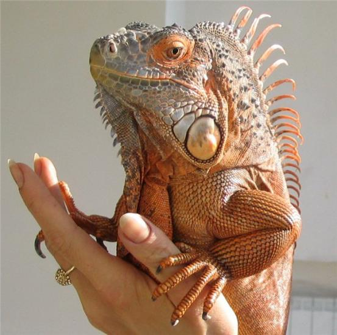
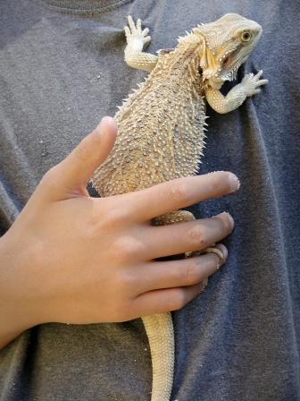

 Рептилии или пресмыкающиеся, как птицы и млекопитающие, относятся к позвоночным животным. Среди типичных террариумных животных они находятся по уровню их развития на наивысшей ступени. Кроме того, они очень популярны среди тех, кто держит террариумы. Именно поэтому мы решили начать с этих животных. Рептилии очень красивы и хорошо "сложены" - так их видит большинство людей. Если же иных трудно назвать красивыми, то они по крайней мере, очень оригинальные животные. И вопреки устоявшемуся мнению, кожа у них не липкая и не скользкая. И даже кожа тех рептилий, к которым мы еще с библейских времен испытывали ужас, на самом деле необыкновенно гладкая и упругая. Изящество и элегантность рисунка кожи рептилий открывается не сразу, а после внимательного изучения. Все рептилии имеют, если только они не плавают в воде или болоте, исключительно сухую, приятную на ощупь кожу, покрытую прелестными, имеющими хорошую форму роговыми чешуйками и с небольшим количеством желез. Не существует таких рептилий, кожа которых была бы покрыта перьями, или волосами, как у других высокоразвитых позвоночных животных. Что рептилий больше всего отличает от других позвоночных животных, кроме кожного покрытия, так это то что они являются холоднокровными животными. Рептилии, как все амфибии, рыбы и безпозвоночные, в отличие от птиц и млекопитающих, являются холоднокровными животными, так как их кровь, а значит и весь организм не имеет постоянной температуры. Она понижается, если понижается температура воздуха. И если температура воздуха становится для рептилий чересчур холодной то они умирают "холодно смертью" гораздо раньше, чем млекопитающие или птицы, которые благодаря своему "внутреннему подогреву" могут выдержать низкую внешнюю температуру. Поэтому в Заполярье живут белые медведи и пингвины, но не могут жить рептилии. Как ни прадоксально это звучит, но холоднокровные животные любят, как правило, жаркую и очень жаркую погоду. Для того, чтобы быть активными и жизнеспособными, им нужно тепло, которое они получают извне, то есть из воздуха и от земли. Например, утром, после того, как ящерицы выходят из своих убежищ, тело их холодное и они малоподвижны. И только после того, когда они "накопят" немного солнечного тепла, они начинают жить в обычном для них режиме. Но и чересчур жаркую погоду они также не переносят, и, чтобы избежать теплового удара, ящерицы прячутся в тень. В наших широтах зима слишком холодная для ящериц. К тому же зимой для них совсем нет пропитания. Поэтому они уходят на зиму в землю или в какое-нибудь убежище, с постоянной и приемлемой для них температурой и впадают в длительную спячку. Вся деятельность организма направлена только на поддержание жизни.
 Из всего этого следует, что понятие "холоднокровный", не совсем точное. Температура крови и соответственно тела у рептилий зависит от температуры окружающей среды. Все рептилии имеют так называемую оптимальную температуру, при которой они чувствуют себя наилучшим образом. Большую часть времени животным требуется относительно высокая температура в 25-40 градусов, которая должна поддерживаться в террариуме. Это особенно важно для рептилий из тропических широт. Несмотря на то, что рептилии так любят тепло, не нужно забывать, что они могут погибнуть и от перегрева. Поэтому перегревать террариумы не следует. Еще одна особенность, которая относится не только к рептилиям, но особенно ярко проявляется у них. Это периодическое сбрасывание и обновление внешнего рогового слоя, особенно четко выраженное у ящериц и змей. Так как роговой покров не растет вместе с ростом животного, его нужно время от времени менять. При этом старый кожный покров "разрывается", когда он становится черезчур узким, и заменяется новым покровом. Ящерицы разрывают в клочья свой старый кожный покров, змеи же снимают его полностью, он выглядит прозрачным и почти невесомым. Этот покров носит название "змеиная рубашка" а по-русски - "выползень" Сбрасывание кожи - это совершенно естественный и необходимый для жизни рептилий процесс, его нельзя считать проявлением болезненного состояния животного.